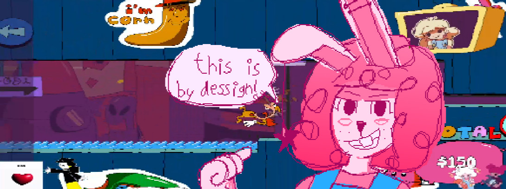

Level Designing
Level designing is een heel belangrijk deel bij het maken van platformer games (games zoals mario en sonic enzo). Je zou zelfs kunnen zeggen dat dit het meest belangrijke deel is. Ah ja, als er een sprong is die bijna onmogelijk is en je krijgt maar een kans om die te doen wordt het al snel niet meer leuk.

Meer info? klik hier